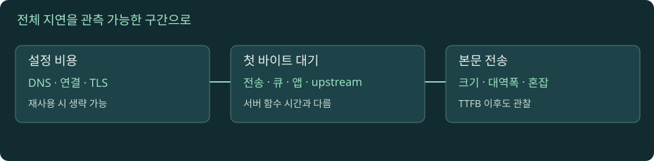

성능을 시간으로 분해하기: 워터폴·대기열·재시도
느리다는 증상을 이름 조회, 연결, 암호화, 첫 바이트, 본문 전송으로 나눕니다. 수치를 직접 바꾸어 병목이 이동하는 과정을 보고, 측정값이 증명하는 범위를 구분합니다.

요청 waterfall 만들기
자바스크립트를 켜면 실험을 조작할 수 있습니다. 아래 본문·도식·실습은 그대로 읽을 수 있습니다.
01. 1. 지연 시간과 처리량은 서로 다른 질문이다
지연 시간은 한 작업이 시작해서 관심 있는 시점에 도달할 때까지 걸리는 시간입니다. 처리량은 단위 시간에 끝낸 작업량입니다. 대역폭은 경로가 보낼 수 있는 데이터율에 관련된 한계입니다. 작은 API 응답은 데이터 크기보다 왕복 횟수와 서버 대기가 지연을 지배할 수 있고, 큰 파일은 전송량과 경로 처리량이 더 중요할 수 있습니다. 인터넷 회선을 더 빠르게 바꿔도 멀리 있는 서버와 여러 번 순서대로 대화하는 비용이 그대로 남을 수 있습니다.
교육용 예로 응답 본문 1MB를 10MB/s의 고정 유효 속도로 받으면 순수 전송에 약 100ms가 필요합니다. 여기에 이름 조회 20ms, 연결 40ms, TLS 40ms, 요청 이후 첫 바이트 대기 200ms가 순서대로 든다면 전체는 약 400ms입니다. 본문 전송 속도를 두 배로 높여도 줄어드는 시간은 50ms입니다. 이 계산은 단일 요청의 직렬 구간과 고정 전송 속도를 가정한 모델입니다. 실제로는 캐시, 연결 재사용, 업로드, 병렬 작업, 혼잡과 CPU가 겹치므로 수치를 실측의 예언처럼 사용하지 않습니다.
02. 2. 워터폴에서 시작점과 끝점을 먼저 정한다
워터폴의 막대는 일정 구간의 시작과 끝을 나타냅니다. DNS, TCP, TLS, 요청 전송, 서버 응답 대기, 본문 수신을 차례로 표시하면 어느 구간이 길어졌는지 볼 수 있습니다. 하지만 브라우저에는 연결 슬롯 대기, 우선순위, 서비스 워커, 캐시, 리다이렉트 같은 과정도 있습니다. 막대의 이름을 실제 측정 정의와 맞추세요. 브라우저가 요청을 준비한 시점, 네트워크를 시작한 시점, 앱 코드가 호출한 시점은 같지 않을 수 있습니다.
연결 재사용에서는 DNS·TCP·TLS 시간이 새로 들지 않거나 도구에서 0으로 나타날 수 있습니다. 이것을 “DNS 서버가 0ms 응답했다”라고 읽으면 틀립니다. 관찰한 요청이 새 조회를 하지 않았을 수 있습니다. 교차 출처 자원의 상세 timing은 보안 정책에 따라 제한될 수 있으므로 빈 칸이 곧 비용이 없다는 뜻도 아닙니다. UI 실험에서는 연결 재사용을 켰을 때 어떤 막대가 제거되는지 확인하고, 제거된 작업과 이미 이전 요청에서 지불한 비용을 구분합니다. W3C Resource Timing 초안
03. 3. curl의 시간은 누적값이므로 차이를 계산한다
time_namelookup은 시작부터 이름 조회 완료, time_connect는 연결 완료, time_appconnect는 TLS 등 애플리케이션 연결 완료, time_starttransfer는 첫 바이트 수신, time_total은 전체 완료까지의 시간입니다. 이 값들은 각각 독립 구간 길이가 아니라 대부분 시작점을 공유한 누적값입니다. 예를 들어 namelookup=0.02, connect=0.06, appconnect=0.10이면 TLS 구간을 0.10초라고 바로 읽지 말고 조건이 맞는 측정에서 약 0.04초 차이를 봅니다.
이 차분법도 모든 요청에 기계적으로 적용하지 않습니다. 프록시, 리다이렉트, 재시도, 재사용 연결, HTTP/3, 업로드와 프로토콜 협상은 의미를 바꿀 수 있습니다. time_starttransfer - time_appconnect에는 요청 전송과 네트워크 왕복, 프록시·서버 대기 등이 섞이므로 앱 실행 시간이라고 부르면 안 됩니다. 비교 실험에서는 같은 URL·본문·경로·도구·캐시 조건을 유지하고 무엇을 바꾸었는지 기록합니다. curl write-out 변수, everything curl · write out
04. 4. TTFB를 서버 코드 실행 시간과 혼동하지 않는다
클라이언트에서 관측한 첫 바이트까지의 시간에는 여러 작업이 들어갑니다. 이름 조회와 새 연결 비용을 포함하는 도구도 있고, 요청 송신 이후를 별도로 표시하는 도구도 있습니다. 요청이 프록시에 도착해 큐에서 기다리고, 앱에서 DB를 기다리고, 응답 헤더가 돌아오는 동안 지연이 더해집니다. 따라서 “TTFB 800ms이므로 함수 실행이 800ms”라는 결론은 성립하지 않습니다. 앱 span 300ms와 클라이언트 800ms가 다르다면 빠진 구간이나 측정 기준을 확인할 근거가 생긴 것입니다.
서버가 측정한 구간을 Server-Timing 같은 방식으로 전달할 수 있지만 그 값 역시 서버가 정의한 범위입니다. DB span끼리 병렬로 실행되면 단순 합이 실제 경과 시간보다 커질 수 있습니다. 클라이언트와 서버 시계의 절대 시각을 빼기 전에 동기화와 계측 기준도 확인하세요. 우선 같은 요청 ID와 상대적인 duration을 연결하고, 네트워크 바깥 구간과 서버 안 구간을 구분합니다. W3C Server Timing 초안은 전달 형식을 정의하며 모든 세부 비용을 자동 수집하는 장치는 아닙니다.
05. 5. 의존성 그래프의 긴 경로가 화면을 늦춘다
브라우저가 HTML을 받아야 스크립트 주소를 알고, 스크립트를 실행해야 API 요청을 시작하고, API가 돌아와야 이미지를 요청하는 구조를 생각해 보세요. 각 요청이 짧아도 순차 의존성이 길면 화면 완성은 늦어집니다. 반대로 서로 독립적인 자원을 동시에 요청하면 개별 시간의 합보다 전체가 짧을 수 있습니다. 여러 막대의 시간을 무조건 더하지 말고 누가 누구의 완료를 기다리는지 봅니다.
최적화는 바이트를 줄이는 것뿐 아니라 불필요한 요청 제거, 캐시 재사용, 중복 조회 합치기, 필요한 정보의 조기 제공, 의존성 단축으로 접근할 수 있습니다. 다만 선행 요청을 과하게 늘리면 실제로 쓰지 않는 자원에 대역폭과 서버 작업을 낭비할 수 있습니다. UI에서 DNS 지연만 줄였는데 전체가 거의 안 바뀌면, 더 큰 서버 대기가 경로를 지배하고 있을 수 있습니다. 개선 전후에는 페이지의 실제 사용 가능 시점이나 업무 완료 같은 목표 지표를 정하고, 한 구간의 감소가 그 목표를 얼마나 바꿨는지 측정합니다. Chrome 요청 timing
06. 6. 평균값은 느린 사용자를 가릴 수 있다
요청 100개 중 95개가 100ms, 5개가 2초라고 합시다. 평균만 보면 대부분 빠르다는 인상을 줄 수 있지만 일부 사용자는 긴 대기를 반복할 수 있습니다. p95는 정해진 계산 방식에서 표본의 95%가 그 값 이하라는 위치를 나타냅니다. 95% 성공률이라는 뜻도, 가장 느린 5%의 평균이라는 뜻도 아닙니다. 표본 수와 보간법에 따라 경계값은 달라질 수 있으므로 적은 표본의 p99를 지나치게 정밀한 숫자로 보지 않습니다.
전체 분포와 성공·실패를 함께 봐야 합니다. 타임아웃 요청을 지연 집계에서 빼면 실패가 늘수록 성공 요청 평균은 좋아 보일 수 있습니다. 서버 여러 대의 p95를 평균내도 전체 요청의 p95가 되지 않습니다. 사용자 지역·API 경로·응답 크기·캐시 hit/miss처럼 원인이 다른 집단을 나누고, 같은 기간과 같은 조건으로 비교하세요. 이 기준은 대시보드의 화려한 숫자보다 “어떤 사용자의 어떤 요청이 영향을 받는가”를 설명하도록 돕습니다. Google SRE · 분산 시스템 모니터링
07. 7. 큐가 길어지면 네트워크가 느린 것처럼 보인다
앱이 초당 100개의 동일 비용 작업을 처리할 수 있는데 초당 150개가 계속 들어오면 대기열이 쌓입니다. CPU 실행 시간은 변하지 않아도 요청 도착부터 응답까지의 시간은 늘어납니다. 연결 풀이나 DB 풀 앞에서 기다리는 시간도 같은 형태를 만듭니다. 클라이언트 워터폴에는 긴 응답 대기로 보일 수 있으므로 네트워크 경로 자체가 느려졌다고 단정하지 않습니다.
정상 상태의 간단한 관계인 평균 동시 작업 수 ≈ 도착률 × 평균 체류 시간은 용량 감각을 잡는 데 도움이 됩니다. 단위가 초당 요청과 초라면 결과는 요청 개수입니다. 다만 시간에 따라 계속 쌓이는 과부하를 이 식 하나로 정밀 예측하지 않습니다. 큐 길이 제한, 동시 실행 제한, 빠른 거절, 부하 분산이 필요할 수 있습니다. 처리량을 늘리지 않은 채 timeout만 길게 바꾸면 더 많은 자원을 오래 붙잡아 회복을 늦출 수도 있습니다. 요청 비용이 서로 다르면 QPS만 같은 비교도 충분하지 않습니다. Google SRE · 과부하 처리
08. 8. 타임아웃·재시도·전체 예산을 하나로 설계한다
사용자가 전체 작업을 3초 기다리기로 했는데 내부 호출마다 3초 timeout을 주고 세 번 재시도하면 전체는 훨씬 길어질 수 있습니다. 연결 설정, 요청 처리, 읽기 비활성, 전체 작업 deadline은 서로 다릅니다. 각 단계의 남은 시간 안에서 시도하고, 결과가 더 이상 필요 없으면 취소를 전달하도록 설계해야 합니다. timeout이 났다고 원격 부작용이 취소되었다고 가정하면 결제 중복 같은 문제가 생깁니다.
재시도는 일시 오류를 흡수하지만 장애 서버의 부하를 더 키울 수 있습니다. 여러 계층이 각각 세 번 호출하면 곱셈으로 증폭될 수 있고, 모든 클라이언트가 같은 순간 다시 시도하면 짧은 폭주가 반복됩니다. 재시도 횟수 제한, 지수 backoff, jitter, 중복 방지 키, 허용된 전체 deadline을 함께 고려합니다. 429나 503의 Retry-After도 서버가 제공하는 신호일 수 있지만 모든 오류에 같은 정책을 적용하지 않습니다. 특히 비멱등 작업은 “응답을 못 받음”과 “실행되지 않음”을 구분해야 합니다. AWS · timeout, retry, jitter, RFC 6585 · 429
09. 9. 개선 실험의 결과를 검산한다
같은 API에서 첫 측정은 캐시 miss, 두 번째는 cache hit였다면 두 번째가 빨라도 코드 변경의 효과를 분리할 수 없습니다. 연결 재사용, 데이터 크기, 동시 요청 수, 지역, 서버 부하를 비교표에 적으세요. 반복 측정은 공개 서비스를 부하 시험하는 방식으로 진행하지 않고 로컬 실습 서버처럼 내가 통제하는 범위에서 수행합니다.
결과는 “총시간이 900ms에서 500ms로 줄었다”에 더해 어느 구간이 줄었고 어떤 조건이 같았는지 설명해야 합니다. 실패한 요청을 제외했는지, 첫 요청 비용을 포함했는지, 사용자에게 필요한 데이터가 실제로 전달되었는지도 확인합니다. 평균 속도 하나보다 측정이 실제 일을 했다는 증거가 먼저입니다.
실습 · 지연을 주입하고 측정 정의 확인하기
교재 폴더에서 python3 tools/lab_server.py로 로컬 실습 서버를 실행합니다. 이 서버는 HTTP만 제공하며 DNS·TLS·HTTP/2·HTTP/3 지연을 구현하지 않습니다. URL은 shell에서 작은따옴표로 감싸서 물음표 해석을 막습니다.
curl -sS -o /dev/null -w 'dns=%{time_namelookup} connect=%{time_connect} first=%{time_starttransfer} total=%{time_total}\n' 'http://127.0.0.1:8765/delay?ms=800'- 같은 명령의 ms를 0, 200, 800으로 바꾸어 반복합니다. 첫 바이트와 전체 시간이 대체로 주입한 지연만큼 늘고, 로컬 연결은 상대적으로 짧은지 봅니다. 스케줄링 때문에 정확히 같은 값은 아닙니다.
curl -v --max-time 0.3 'http://127.0.0.1:8765/delay?ms=800'로 전체 제한이 먼저 끝나는지 확인합니다. 클라이언트 종료가 서버 작업 취소를 보장하는지 구분합니다.curl -i 'http://127.0.0.1:8765/status?code=503'에서 HTTP 상태와 curl의 프로세스 종료를 비교합니다. 기본 curl은 HTTP 오류를 곧바로 전송 오류 종료로 취급하지 않을 수 있습니다.--fail사용 여부를 기록합니다.- UI 워터폴에서 DNS·연결·TLS·응답 대기·본문 전송 시간을 각각 바꾸고 가장 긴 구간 하나만 줄였을 때 전체가 얼마나 달라지는지 계산합니다. 화면은 본문 크기와 대역폭을 따로 입력받지 않고 전송 시간을 직접 조정하는 모델입니다.
- 실제 인터넷 측정은 example.com에 소수 요청만 사용합니다. 캐시·연결 재사용·지역 차이가 있으므로 로컬 지연 주입과 같은 통제 실험으로 보지 않습니다.
결과표에는 명령, 반복 횟수, 중앙값과 범위, 실패 수, 바꾼 조건을 적습니다. 확인 질문: 첫 바이트 800ms만으로 DB가 800ms라고 말할 수 있나요?
로컬 실습 서버 실행과 공통 명령은 실습 안내에서 확인하세요. 실제 HTTPS·HTTP/2·HTTP/3 서버를 제공하는 실습은 아닙니다.
이해도 확인
선택 후 이유를 설명하고 정답을 확인하세요.
원전과 더 읽을 자료
- curl man page
- everything curl write-out
- Chrome Network timing
- W3C Resource Timing 초안
- W3C Server Timing 초안
- Google SRE 과부하
- AWS timeout retry jitter
표준과 공식 문서를 참고해 독립적으로 구성한 학습 설명입니다. 예시 결과와 시간은 명시한 경우를 제외하면 교육용입니다. 확인 기준: 2026-11-09.
진행률은 현재 브라우저에 저장됩니다. 파일 직접 열기와 HTTP 접속은 저장 공간이 다를 수 있습니다.